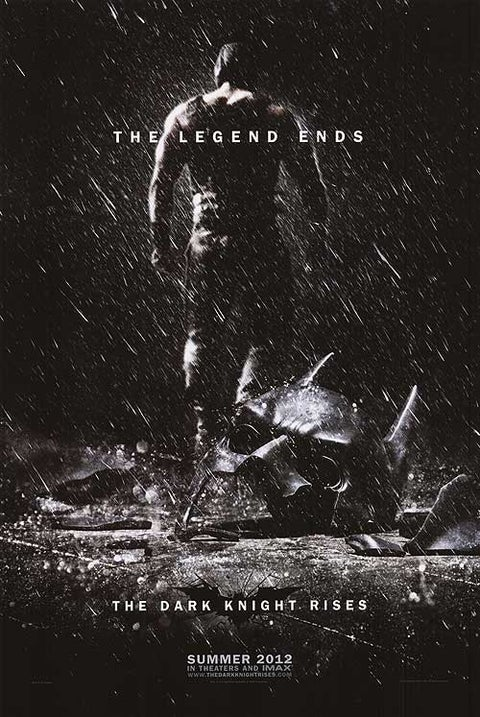

《黑暗騎士：黎明昇起》（英語：The Dark Knight Rises）
是一部於2012年上映的超級英雄電影，由克里斯多福·諾蘭執導，並與他的弟弟強納森·諾蘭共同編劇。故事由諾蘭和大衛·S·高耶所提供。
該片為諾蘭所執導的黑暗騎士三部曲中的最後一部作品，且是《蝙蝠俠：開戰時刻》（2005年）及《黑暗騎士》（2008年）的續集。克里斯汀·貝爾、
米高·肯恩、蓋瑞·歐德曼及摩根·費里曼分別於電影中飾演布魯斯·韋恩 / 蝙蝠俠、阿福·潘尼沃斯、詹姆斯·高登與盧修斯·福斯。電影還出現了塞琳娜·凱爾（安·海瑟薇飾演）和班恩（湯姆·哈迪飾演）。
背景設定於上部《黑暗騎士》的八年後，新敵人班恩的無情虛假革命迫使隱居的布魯斯·韋恩復出成為蝙蝠俠，並從核危機之中拯救高譚市。
劇情靈感來源自著名蝙蝠俠漫畫《蝙蝠俠：騎士隕落》、《蝙蝠俠：黑暗騎士歸來》和《蝙蝠俠：無人地帶》。導演克里斯多福·諾蘭最初對電影蝙蝠俠第三部的發展有所猶豫，
由於前作《黑暗騎士》獲得的高評價，諾蘭擔心三部曲可能無法超越二部曲的優異表現，但最終同意製作。